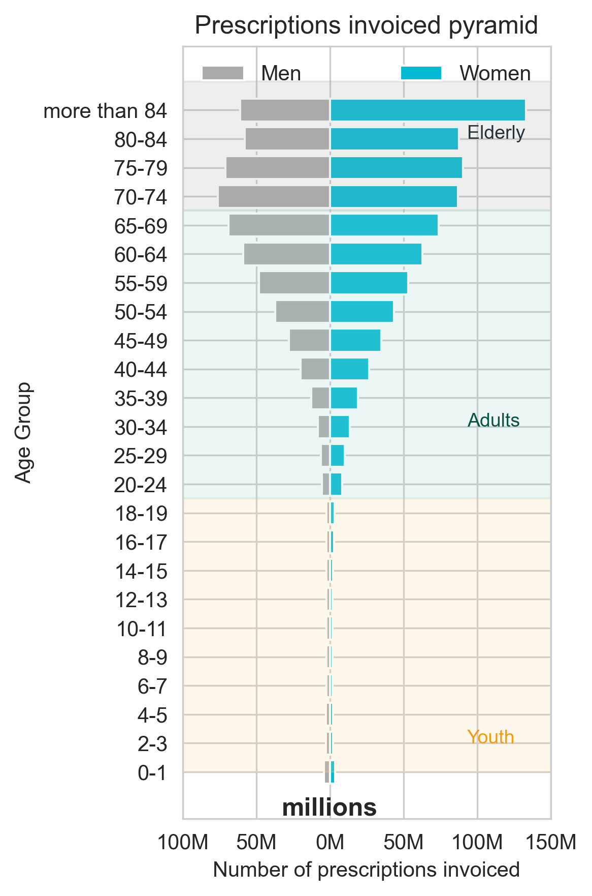

From Painkillers to Pills: The Meds Catalans Can’t Live Without
New data uncovers shifting prescription habits across Catalonia—revealing rising drug demand, regional quirks...what’s topping pharmacy lists in 2024?
For the past 10 years, benzodiazepines—used to treat anxiety, insomnia, and related disorders—have topped Catalonia’s prescription charts. But in a notable shift, analgesic-antipyretics like paracetamol overtook them in 2024, signaling a possible change in public health priorities.
This reversal comes amid a broader 15% rise in prescriptions since 2019 and growing regional differences in drug use. Whether this marks a short-term response to viral illness or a deeper transformation in treatment patterns remains an open question.

Anagesic Tops the Charts in 2024
In 2024, analgesics such as paracetamol emerged as the undisputed leader among prescribed medications across Catalonia. Closely behind were Benzodiazepines, used primarily as a sedative anxiolytics, and Cholesterol-lowering statins in order to regulate its levels. Together, these three medications accounted for over 50% of all prescriptions among the top 10 most-used drugs, underscoring their role as cornerstones in general medical treatment.

Chronic Conditions, Mental Health, and Post-Pandemic Shifts
Across the board, total prescriptions have increased significantly, with major surges in painkillers, mood medications, and cardiovascular drugs. The post-COVID years especially appear to have reshaped Catalonia’s prescription landscape—highlighting an urgent need for both physical and mental health care. As doctors, policymakers, and communities continue to grapple with the aftershocks of a global health crisis, the contents of Catalonia’s medicine cabinet reveal more than treatment patterns—they show the pressures, pains, and progress of a region in transition.
For nearly a decade, benzodiazepines—used to treat anxiety and insomnia—have been the most prescribed class of medication in Catalonia. In 2016, over 8.9 million prescriptions were issued. This figure peaked in 2021 at 9.5 million, before gradually declining to just under 9 million in 2024.
While benzodiazepines dominated much of the past decade, painkillers and fever reducers like paracetamol have steadily climbed the ranks. In 2024, this group officially became the most prescribed medication class, surpassing benzodiazepines with over 9.4 million prescriptions.
Medications for heart rate reduction and blood pressure control have risen moderately, indicating ongoing management of cardiovascular conditions. Statins, used to lower cholesterol, have remained relatively stable, hovering around 8 million prescriptions annually, with a slight uptick in recent years.
Prescriptions for heparin-based blood thinners saw a peak in 2016, likely due to post-surgical protocols or clot prevention trends, but have since declined slightly. Meanwhile, acid-reducing medications like omeprazole remain heavily prescribed—though they've dropped from their 2016 high of 9.3 million to 7.6 million in 2024.
One standout anomaly: a dramatic spike in non-specified prescriptions in 2020, doubling from the previous year. This likely reflects the urgent and sometimes inconsistent prescribing during the first wave of the COVID-19 pandemic, when new protocols were rapidly evolving and records may have been logged under broad categories.
Benzodiazepines Reign Across Catalonia, But Paracetamol Dominates in the Capital
A regional breakdown of Catalonia’s prescription data reveals a striking trend: benzodiazepines—commonly used to treat anxiety and insomnia—are the most prescribed drug class in nearly every health region. From Girona to Lleida and the mountainous Alt Pirineu i Aran, benzodiazepines account for millions of prescriptions. In Barcelona province alone, over 46 million prescriptions were invoiced for these sedative medications, highlighting their entrenched role in the region’s mental health treatment landscape.

However, a notable exception emerges in the heart of the region. In Barcelona city and its surrounding metropolitan areas (North and South), the most prescribed medications were anilides, a category that includes paracetamol—a widely used painkiller and fever reducer. Together, these areas saw nearly 8 million prescriptions of anilides, pointing to a broader demand for analgesic treatments likely driven by post-viral symptoms, chronic pain, or aging-related conditions.
A Gendered Health Divide: Women Dominate Prescription Use After Middle Age
A sweeping look at prescription medication costs by age and gender in Catalonia reveals a stark and growing divide: women dramatically outpace men in pharmaceutical spending—especially after the age of 40. While both boys and girls show modest and fairly balanced prescription figures in early childhood, a noticeable divergence begins in adolescence and accelerates throughout adulthood. From the age of 35 onward, women not only surpass men in medication costs, but the gap widens sharply into old age.
- Early years (0–19): Prescription costs are relatively low for both genders, with a slightly higher spend among girls in the 16–19 range reflecting earlier puberty-related health needs or mental health care.
- Young adults (20–34): The gender gap begins to open. Women in their 20s and 30s are already spending significantly more than men. Reproductive health, hormonal treatments, and rising mental health prescriptions may explain the early divergence.
- Middle age (35–64): Here, the disparity becomes striking. For example, women aged 50–54 spend over €43 million, while men in the same group reflect a net cost of -€37 million—a 6 million euro difference. This age group typically sees the onset of menopausal care, cardiovascular treatments, and continued use of anxiolytics or antidepressants, which women are statistically more likely to receive.
- Seniors (65+): The gender gap peaks in older age. Women over 84 account for €133 million in prescription costs, while men of the same age group show just €60 million. With women living longer, and often managing more complex chronic conditions in old age, the burden—and cost—of pharmaceutical care heavily tilts toward them.
What’s Behind the Divide?
Health experts point to a combination of biological, behavioral, and systemic factors. Women tend to live longer than men, which naturally leads to more years managing chronic illnesses and age-related conditions. They are also more frequently diagnosed with anxiety, depression, and autoimmune disorders—conditions that often require long-term pharmaceutical treatment. In addition, preventive care and reproductive health needs contribute to ongoing prescriptions throughout a woman’s life. Social dynamics play a role too: women, often cast in caregiving roles, may be more proactive in seeking medical attention and adhering to treatment, further driving the disparity in prescription use.
This sharp divergence in prescription spending raises important questions for Catalonia’s healthcare system. As the population ages, and as gendered patterns in care-seeking continue, targeted strategies may be needed to ensure access, equity, and efficiency in drug delivery—especially for older women.